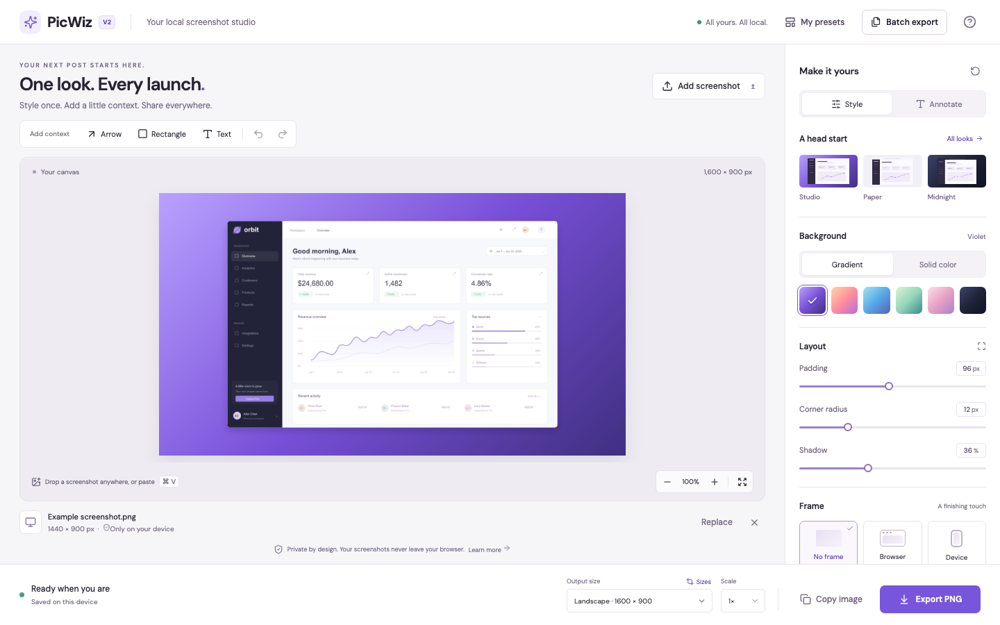

PicWiz V2已实现 · 已验收
110 单元／适配器57 浏览器用例3 浏览器引擎

下一阶段，由你选择
以下是产品与技术建议，尚未实现。可分别批准，也可暂缓。
D1Template gallery
从完整构图开始：一个本地源图、可选细节放大与标题。
先 6 个模板。A 需构建发布，B 增加内容后台和供应商。D23D mockups
先用一个通用手机验证真实 PNG 输出，保留 2D 回退。
A 不对应具体品牌型号；B 增加资产授权和 GPU 调优成本。D3Video exports
淡入、轻推或重点显现。先验证 720 系列短视频，再决定产品化。
本地编码有设备差异；云方案需另行确认上传、保留期和费用。D4Accounts
登录的价值先是跨设备复用外观，匿名编辑继续可用。
仅主动同步外观。A 需持续维护；区域、邮件与备份预算另行确认。建议顺序：Gallery → 静态 3D → 2D Video → 可选 Accounts。3D 视频需要渲染与编码两条链分别过关。
这里只整理选择，不会提交、开通服务或开始开发。可将文字复制到对话中。